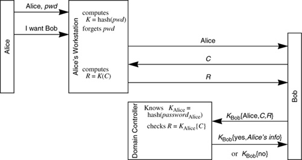

Networking Security Networking Security Networking Security Security Networking Security Networking Security Networking Charlie Kaufman Radia Perlman Mike Speciner Prentice Hall Network Security: Private Communication in a Public World, Second Edition Networking Security Networking Security Networking Security Security Networking Security Networking Security Networking Charlie Kaufman Radia Perlman Mike Speciner Prentice Hall Network Security: Private Communication in a Public World, Second Edition
24.7. Microsoft Windows Security
24.7.1. LAN Manager and NTLM
LAN Manager comes equipped with a simple, straightforward cryptographic authentication protocol between client and server based on shared secrets. Each server that a user is entitled to access is configured with security information about that user, including a hash of the user's password. When a user Alice wishes to access a server, she types her name and password at her workstation, which contacts the server, sending Alice's name. The server sends a challenge, which the workstation encrypts using the hash of the user's password. Some applications (like RPC) continue cryptographic protection beyond the initial handshake using the user's hashed password to establish a session key.
This protocol is very similar to NetWare V3. In both protocols, the fact that the server stores a hash of the user's password rather than the actual password does not theoretically make the scheme more secure. A modified version of the client software could impersonate the user if it directly used the hash of the password rather than hashing the string the user types. But it would be a lot more convenient and practical for an intruder Trudy if she could capture the actual password rather than the hash of the password, since then Trudy could type the password at unmodified client code. One difference between the protocols is that the LAN Manager scheme does not use salt. That means that if the user uses the same password on multiple servers, and an intruder captures one server's database, the intruder can impersonate the user at other servers.
For NT, the scheme was extended in a way that was transparent to client machines. Transparent means that the new scheme works with the old client code and in fact a client machine cannot tell based on the protocol whether the server is using the old protocol or the new protocol. In the NT protocol, instead of keeping the security information at each server, security information is stored in a trusted on-line entity called a domain controller. The new scheme is called NTLM. It has the following advantages:
Management is simplified, since user security information only needs to be configured into a single location, the domain controller. It is more user-friendly, since a user will have a single password that will work on all servers the user is entitled to use. In the old scheme, a user could certainly use the same password on all servers, but when the user Alice changed her password, she'd have to remember to change her password at all the servers.
The NT scheme works like the authentication facilitator node we discussed in §9.1.2 Storing User Passwords. The domain controller (which is what we called the authentication facilitator node), stores a secret for each server in the domain, which enables a server in the domain and the domain controller to communicate securely. The domain controller also stores security information for each human user in the domain, including a hash of the user's password, a list of groups to which the user belongs, when to prod the user to change her password, and the hours she's allowed to log in. When a user wishes to log into a server in the user's domain, that server sends a challenge to the user's workstation, which then generates a cryptographic response based on the user's password and the challenge (see Figure 24-8). Since the server does not store any security information for the user, it cannot evaluate the response. Instead, in an encrypted conversation to the domain controller, the server forwards its challenge and the workstation's response. The domain controller answers yes or no in the encrypted reply to the server. If the answer is yes, the domain controller also sends information about the user, such as to which groups the user belongs, and the user's hashed password. (This information, like all the sensitive information between the domain controller and the server, is encrypted.) The hashed password is transmitted so that the server can use it to compute a session key for protection of the remainder of the client-server conversation.

It is possible for a client in one domain D1 to be authenticated by a server in another domain D2 provided that D1 and D2 have been preconfigured to trust each other. There is no transitivity, i.e., if Alice is in domain D1 and Bob is in domain D2, they can communicate if D1 and D2 have a trust relationship. It is not possible to transit through domain D3 in the case where D1 and D3 trust each other and D3 and D2 trust each other but D1 and D2 do not trust each other. This is similar to Kerberos V4.
Names include a domain name, for example D1\Alice and D2\Bob. When Alice's workstation contacts Bob, it transmits Alice's name (D1\Alice). Bob contacts Bob's own domain controller, as in the single domain protocol. But Bob's domain controller can't make the decision since D2 has no information stored for D1\Alice. But D2 can communicate securely with D1, and so D2 forwards the information (D1\Alice, C, R) to D1, which replies to D2 with yes (plus group information, Alice's hashed password, and so on) or no, and then D2 relays this information to Bob (see Figure 24-9).
The cryptographic aspects of the protocol are straightforward. RC4 is used to encrypt the conversation between the server and the domain controller. The domain controller has a long-term secret key stored for each server in the domain, and uses that to establish initial mutual authentication with the server, but as a side-effect of the authentication they establish a session key, and use that to encrypt subsequent communication. The session key for the conversation with the domain controller is obtained by adding the two challenges used in the mutual authentication and encrypting the result with the long-term secret. There is an authenticator in every packet that proves the message is in proper sequence, which prevents session hijacking, but is not used to provide integrity protection of the contents of the message. Encryption is only used on select fields in the packet, i.e., only where necessary.
24.7.2. Windows 2000 Kerberos
With Windows 2000 came another step in the evolution of Windows authentication. User authentication information is moved from the Domain Controller to Active Directory, which serves as both KDC and directory service. The protocol is a modified version of Kerberos V5.
As with OSF DCE, the designers at Microsoft were faced with the challenge that while Kerberos is designed to provide authentication of the names of communicating principals, what the OS needs for users is not a name but rather a UID (user ID) and a list of GIDs (group IDs), since that is the information used to make access control decisions. Otherwise there would need to be a separate translation mechanism available to every server. The Microsoft design is similar to the OSF DCE design, but simpler and more controversial. Both use the AUTHORIZATION-DATA field in the Kerberos ticket to hold the additional information. But unlike OSF DCE, which stood on its head creating a virtual Privilege Server entity and had many additional round trips when logging in users, Win2K Kerberos simply had the KDC add the AUTHORIZATION-DATA field to the ticket when it was generated. Technically, this did not comply with the Kerberos specification (though there have been legalistic arguments over whether it does or does not) while the OSF DCE approach did. But only lawyers worry about compliance. Users and system administrators worry about interoperability, and both OSF DCE and Windows 2000 Kerberos offer only backward compatibility with "standard" Kerberos applications. They offer none with one another nor can their services authenticate users not registered with their own registries.
Another source of controversy is that the syntax of the authorization extensions is an "open secret". At the time of this writing, the design was posted at http://www.microsoft.com/technet/security/kerberos/ and was downloadable by anyone, but required readers to acknowledge that the information is a trade secret of Microsoft, that they may only read it for purposes of reviewing its security, and that they may not discuss it with anyone who had not agreed to the same terms. Whether a company can retain trade secret rights to published information is an interesting legal question. In the court of public opinion, most observers are unwilling to call such a design "open".
Another practical problem in Kerberos in the multi-realm case is that Kerberos doesn't specify how clients should find a sequence of realms that will allow them to authenticate to a remote server and doesn't specify how servers should decide whether a given sequence of realms is acceptable. This complex set of configuration issues is left to client and server implementations. In most cases, it would be more practical to configure this information in the KDCs. In the Windows 2000 Kerberos protocol, a client does not need to figure out the path to a remote service. It requests a service ticket from its local KDC, which instead returns a TGT to the next KDC in the chain. The client then repeats this process until it reaches the service's KDC, which gives it a service ticket. The KDCs should (and may) also check incoming requests to assure that the client has come through an acceptable sequence of KDCs on its way to the server and refuse to issue the next ticket if not. In this case, neither the client nor the server would need any knowledge of trust relationships. If authentication succeeds, it implies that the intermediate KDCs did all of the appropriate checks and it was OK. This extension has been proposed for standardization in the next revision of Kerberos.
|